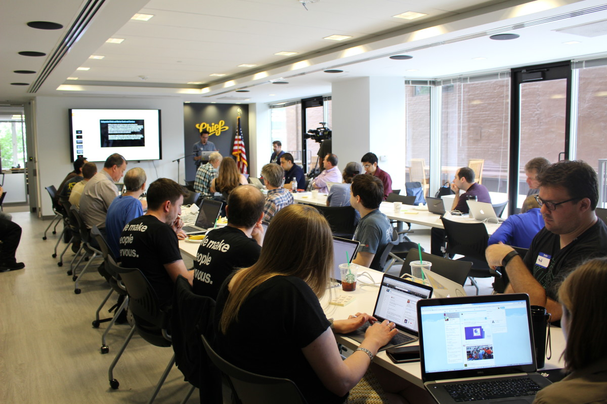

Help Us Make Evansville Better for All of Us
Hack Evansville is a volunteer civic hacking collaboration between developers, designers, government workers, organizers, and other community stakeholders in the Evansville/Vanderburgh County area.
We help local governments, organizations, and the general public improve the quality of our life together by finding creative solutions to issues that affect us daily.
We're looking for
- Developers
- Data scientists/analysts
- Designers
- Researchers
- Local officials
- Civic leaders
- Entrepreneurs
- Idea makers
- Project managers
And anyone else who wants to take an active role in making our community a better place for everyone.

A group of civic hackers in Washington, D.C. at the 2015 National Day of Civic Hacking
Photo by Lalita Clozel (source)